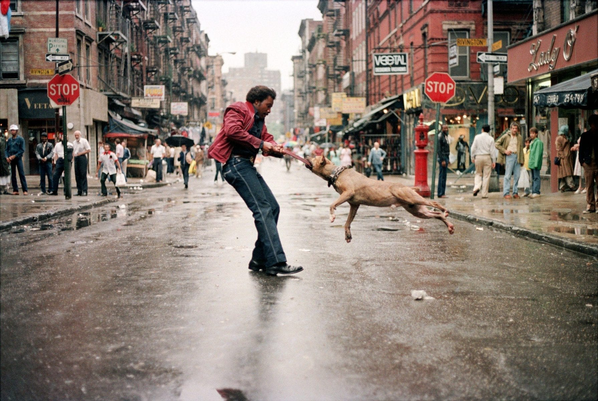

About Me
I'm John, a street photographer based in Street with a deep passion for Streets. I travel across cities, towns, and villages to capture the raw beauty and untamed spirit of the street environment; from the power of grafitie to the quiet elegance of the skyline.
My work focuses on storytelling through the lens, highlighting the fragile balance of these streets and the importance of the streets. I’ve exhibited locally and collaborate on projects that celebrate englands incredible steet life.
Selected Work


Get in Touch
Available for commissions and prints.